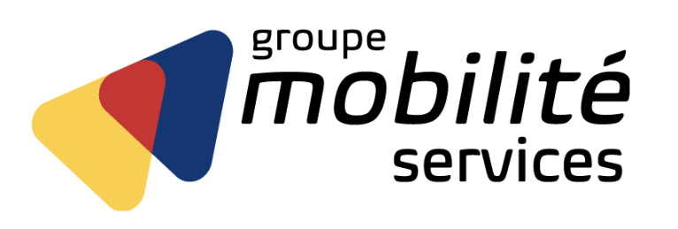
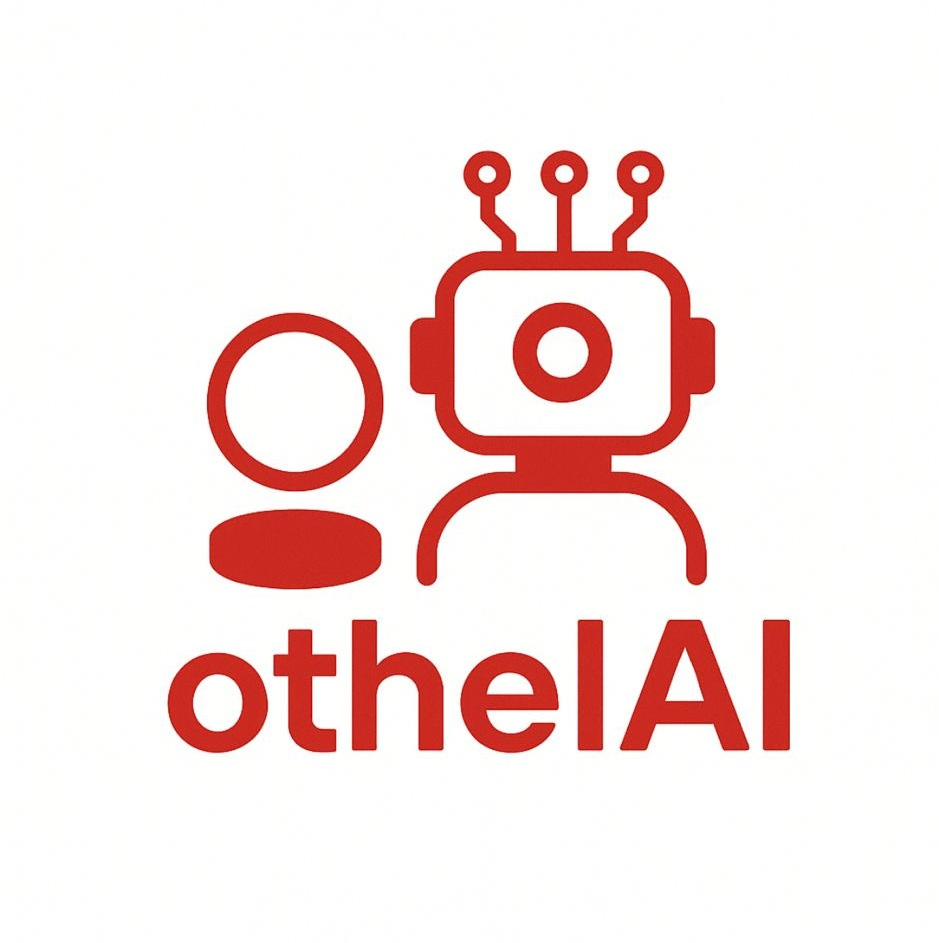
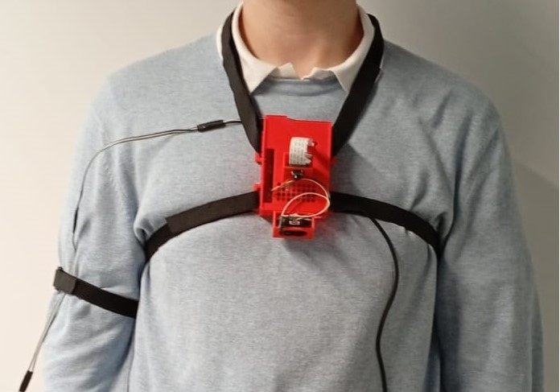
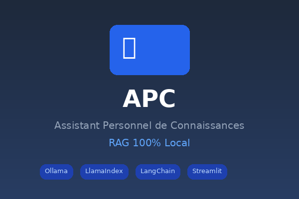

Aristide Leparoux
Étudiant en Data Science à EURECOM
Ce site a pour vocation de présenter en détail les projets techniques que j'ai réalisés. Vous y trouverez des approfondissements sur mes travaux en Data Engineering, Machine Learning et développement logiciel.
Actuellement étudiant à EURECOM (Sophia Antipolis), je me spécialise en science des données. Mon parcours inclut une classe préparatoire MP2I/MPI* et diverses expériences pratiques, dont la mise en place d'un dashboard en temps réel et le développement d'IA de jeu.
Je suis à la recherche d'un stage de 6 mois (juillet 2026 - janvier 2027) autour de la data engineering, machine learning ou science des données.
Projets Réalisés

Dashboard Temps Réel — Stage (2 mois) Mobilité Services
Création d'un dashboard en temps réel avec Apache Superset, orchestré par Airflow et alimenté par PostgreSQL pour le suivi des KPI du support IT.

OthelAI — Jeu Othello avec IA
Développement d'un jeu Othello multijoueur en ligne, backend Flask et IA en C pour l'adversaire.

CANNEBERRY — Aide aux Malvoyants
Système d'aide à la navigation pour personnes malvoyantes, détectant les obstacles sur un chemin.

APC — Assistant Personnel de Connaissances (RAG)
Chatbot documentaire 100% local pour étudiants. Pipeline RAG avec Ollama, LlamaIndex et LangChain pour interroger ses cours, générer des exercices et des flashcards.
Deep Learning : Video Frame Interpolation
Real-Time Intermediate Flow Estimation (RIFE)
Architecture multi-échelle pour l'estimation de flux optique et interpolation
vidéo 30→60 fps.
Recherche : Portfolio Minimum-Variance
Projet de recherche (100h) — Mathématiques & Finance
Optimisation sous contraintes de portefeuilles et réduction de la variance.
Modélisation mathématique et implémentation d'algorithmes.